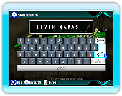
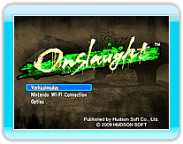
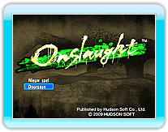

9 |
Het spel starten |
 |
|
Druk op het titelscherm op

Als je voor de eerste keer speelt, zal het volgende scherm je vragen de gewenste spelersnaam in te voeren. Namen mogen maximaal 13 karakters breed zijn. (Namen met ongepaste taal zijn niet toegestaan.)
Na het bevestigen van je spelersnaam, kies je het land waarin je woont in het Kies Land-scherm.
Vervolgens zal het Kies spel-scherm verschijnen. Kies een modus met de aanwijzer en bevestig met
Nadat je "Verhaalmodus" geselecteerd hebt kun je kiezen tussen "Nieuw spel" en "Verdergaan".
Kies "Nieuw spel" om een nieuw spel te starten, en "Verdergaan" om verder te gaan met een vorig spel. |
 |
 |
 |